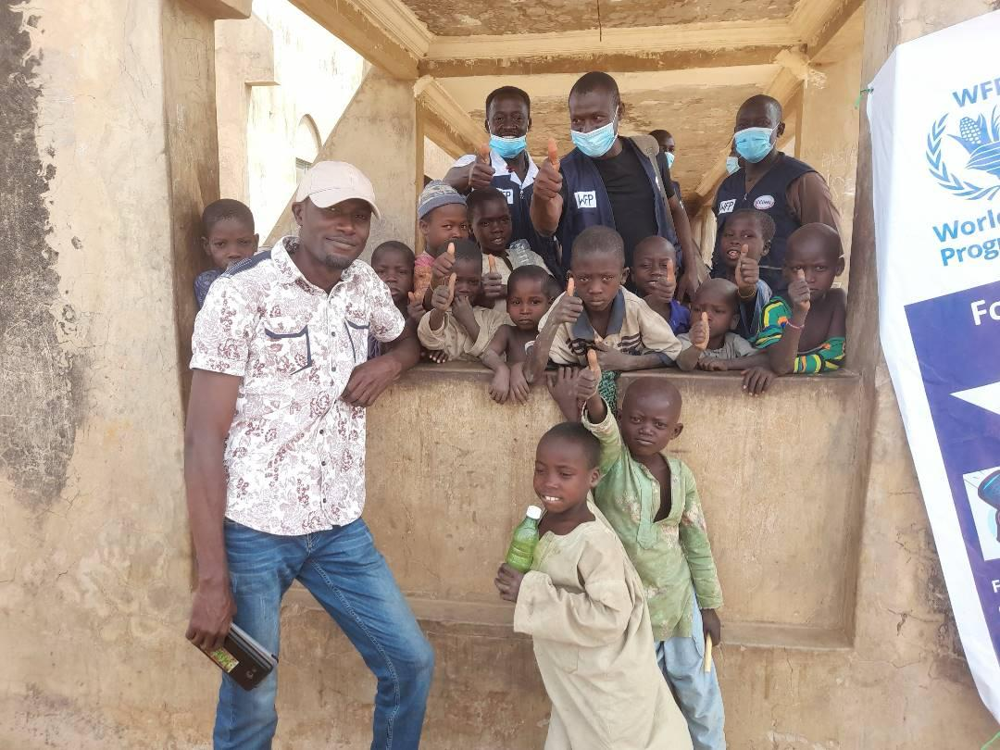
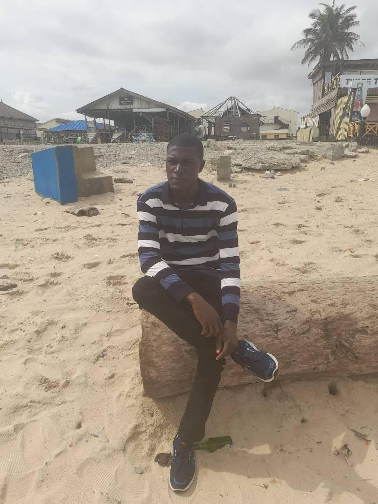
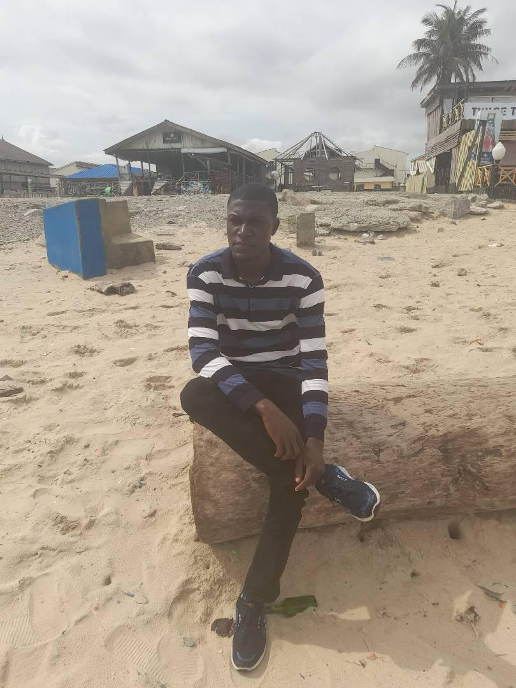

Humanitarian Aid in Action
 

Who We Are
UNIVERSH LIMITED is a humanitarian NGO dedicated to providing support to the poor and vulnerable across the globe. Our mission is to simplify life, empower communities, and inspire people towards a better future.
Our Core Values
Our core values include compassion, integrity, and commitment to positive change. We believe in the power of collective effort to uplift communities and bring about sustainable development.
What We Do
We deliver humanitarian aid, provide educational resources, and promote sustainable solutions to help communities thrive. From food distribution to health services, we are committed to impactful and lasting support.
Partnership
We work with local and international partners to expand our reach and strengthen our impact. Together, we can address urgent needs and create long-term solutions for a brighter future.